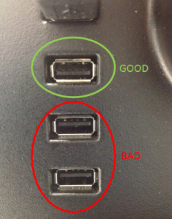

Workstation Issues
Date and Time resets after each restart of the Panther PC
- Possible Root Cause:
- USB drive was inserted upside down into the USB hub board. That used slot/port short circuits the BIOS system on the Panther PC during boot up. The shorting of the BIOSWhich causes a reset of the date & time.
- Troubleshooting Procedure:
- Inspect at the
 external USB hub board. Green circle shows the correct orientation of the USB port, whereas the red circle shows an incorrect orientation of the USB ports.
external USB hub board. Green circle shows the correct orientation of the USB port, whereas the red circle shows an incorrect orientation of the USB ports.
- Determine which USB cable belongs to the USB hub board.
- Boot-up the Panther and login to the FSEField Service Engineer. shield.
- Open Windows Explorer
- Go to Computer
- Plug in a USB drive into a working slot on the USB hub and check that it appears in Windows Explorer.
- Unplug each USB cable from the back of the computer (one by one) until the cable that was removed causes the USB drive to disappear from Windows Explorer.
- Boot-up the Panther and login to the FSE
- Reset the date and time. See Panther Service Manual for instructions.
- Plug in all USB cables except the USB cable for the hub board.
- Restart the computer.
- If the date and time does not reset, you have found the root cause.
- Replace the USB hub board.
- Inspect at the
Warning Message: " Monitor Out of Range"
- Reason Behind the Message:
The monitor out of range is raised when the graphics card has a higher resolution set or than what the monitor can support or an unsupported refresh rate. This can be because the cables, the power to the monitor, or a different monitor with higher resolution was plugged in, the OS bumped up the resolution then the monitor was switched back.
- Possible Root Cause:
- Very long video cable
Movements of the cables, can also lead to such issue.
- Monitor power supply
Not enough power may lead to strange side effects or resolutions.
- Very long video cable
- Troubleshooting Procedure:
-
I disconnected the VGA cable and re-inserted.
-
Perform the PC maintenance. Sequence of operations are:
-
Click on "Task, Perform maintenance"
-
Select weekly "PC maintenance".
-
Press "Start" button, and then press "Start" button to begin PC shut down. PC shuts down and automatically restarts to Shield screen.
-
Select Panther icon and GUI
Graphical User Interface – allows users to interact with the software using images, graphical icons, and visual indicators rather than text commands. starts. -
Screen should be okay, with no resolution problems.
-
 button at the top of the page to send feedback, comments, or change requests.
button at the top of the page to send feedback, comments, or change requests.